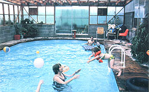
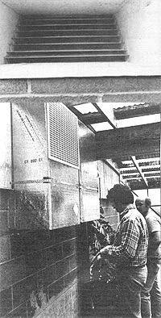
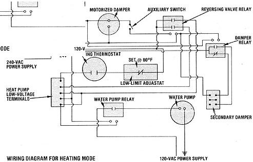
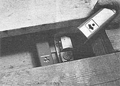

An indoor pool - with this system - can actually pay for itself in reduced utility bills!
Five years ago, when my husband and I installed a 16' X 32' vinyl swimming pool in a room enclosed in translucent fiberglass, we weren't being merely self-indulgent. I needed that "luxury" for therapy, you see, since I'd earlier developed a muscular/neurological disease that only a daily routine of swimming and pool exercise would help to control.
Of course, I'll be the first to admit that having a heated pool was a real treat, because we live on the cool Oregon coast where - during much of the year - the ocean water is icy enough to turn swimmers blue. And because the indoor facility was attached to our garage, we could even get to it without braving our winter rains, which occur often enough to dump 60" to 90" of moisture on our part of the state each year.
At first, we were quite able to afford the extra energy consumed by the pool's electric water heater, but - little by little - the utility rates in our area climbed. By January of 1981 we were paying 43% more for electricity than we had when the pool was built . . . and our city announced an upcoming 25% annual increase. Since runaway inflation was already playing havoc with our retirement budget, we simply couldn't handle those increasing costs. Yet I didn't want to sacrifice my health or take on the medical expense of outside therapy, so I decided to look for an alternative way to heat our swimming water.
A FORTUNATE MEETING
To my dismay, research soon revealed that oil heat was even more expensive than electricity, and natural gas isn't available in our area. Then, following the suggestion of several friends, I investigated solar heating methods, only to learn that we'd have to spend $4,000 to $12,000 for a system that would still need frequent backup in our commonly cloudy area.
In short, I was just about to give up when I was introduced to a young man named Michael Lindsay, who - with his father - owns the Lindsay Furnace Service (Dept. TMEN, 1239 Andrew Street, Coos Bay, Oregon 97420). Mike was intrigued by our problem . . . enough so that he offered to come to our house to study the situation, at no cost to us. Suffice it to say, we accepted his offer. Mike came out and - after a lot of measuring and muttering to himself - finally announced, "What you need is a heat pump." That was an idea we'd never considered, so our expert set out to explain what he had in mind.
"The heat pump concept dates back to the 1850's," he told us, "but efficient, well-serviced models weren't developed until after the 1973 oil crisis. The principle is basically the same as that used in a refrigerator, where heat is removed from inside the box and discharged into the room. A home air conditioning unit performs in a similar manner, by removing heat from the house and discharging it outside. And if this operation is reversed - if heat is removed from the outdoors, concentrated (in effect), and funneled into the living space - you have what's commonly called a heat pump.
"In your case, there's a considerable heat gain in your fiberglassed enclosure, even on cloudy days, and that warmth can be efficiently transferred to the pool. I suggest, though, that instead of the conventional airsource heat pump, we install a water-source model designed to utilize the warmth stored in wells, lakes, and streams. This type is approximately three times as energy-efficient as an electrical heating system. It's similar in operating principle to an air-source unit, but exchanges heat with water rather than air. In fact, we can use the warmed air in the pool room to heat your swimming pool, then - while we're at it - we can use the water in your pool to help warm your house!"
As you can imagine, that last bit of news really made us sit up and listen, and Mike - seeing our interest - went on enthusiastically: "Since the swimming pool provides a perfect heat sink, with a good amount of thermal storage capability, I'll design a reverse into the system. Heat from the pool can then be extracted and transferred - through air ducts - to your home. This will cause the pool temperature to drop by only a few degrees, and as soon as the house is up to temperature, you can go back to heating the pool."
Mike's proposal was pretty attractive to us, especially since we were depending on electric baseboard heat in our house . . . and that cost, too, was getting out of hand.
After making a few more calculations, Mike came up with a $5,000 estimate for the dual-purpose installation. We thanked him and told him we'd be in touch. Then we talked it over . . . juggled our budget a good bit . . . studied brochures on heat pumps . . . and finally decided to install the suggested system.
AN IDEA MADE REAL
Two days later, Mike and his assistant Bill arrived with our heat pump. The 22" X 27" X 44" unit is similar to an electric furnace in appearance. But before it could be hooked up, holes had to be cut - through concrete block - from the garage to the pool room. After that, the return and supply ducts were mounted side by side in the wall. Next, Mike designed a motor-driven damper and installed it in the ductwork to direct the air.
"When the pool needs heat," he explained, "the flow pattern will be such that heat from the air in the pool room will be transferred to the water. Then, when the thermostat signals that your living quarters require heat, the airflow will switch to the house circuit, and water from the pool will be delivered to the pump's heat exchanger, where the house air will pass over it and warm up."
Finally, aquastats equipped with sensors were plumbed into the pool under a deck board. These cut in the heater whenever the water temperature drops below 80°F, which I find a very comfortable temperature for swimming.
We were quite excited - and just a little nervous - when Mike turned on the heat pump. Bill held a thermometer in the pipe that began shooting the warmed water into the pool, and the reading was 97°F. What's more, the rate at which that water was being pumped (recirculated) measured nine gallons per minute. The system was a success . . . in fact, it exceeded even Mike's calculations!
FROM POOL TO HOUSE
With the first part of the plan functioning perfectly, it was time to arrange for transferring heat from the pool to the house. To do so, the men constructed ducts (heavily insulated to insure efficiency and quiet) and strapped them to the basement ceiling, using turning vanes at any 90° corner.
Then Bill cut a large outlet in our entry hall, upstairs, and covered it with an attractive grille. A return duct in the wall of the stairwell leading to the basement allows circulation of air. We can, anytime we choose to do so, install more ducts to move warmth into the bedrooms and baths. We can even add an attachment to the heat pump that will preheat our domestic hot water supply, and - budget allowing - we've decided to try that next. (If you live in a sunnier climate than we do, you may be interested in knowing that Mike is sure a system like ours could be used quite effectively with a solariheated swimming pool.)
It would be advantageous to have a larger pool . . . one with the volume to store an adequate amount of heat for our house during long periods of inclement weather. As it is, we did occasionally have to fall back on our electric heat last winter . . . but we're not complaining! After all, this heating system decreased our utility bills - compared with the previous year - by half during the rainy winter months . . . and by two-thirds during the summer!
|
 ABOVE: Here we see the turning vanes (before the grilles are added), which greatly increase efficiency and quietness. BELOW: The inlet-outlet ducts in the pool room's wall. |
 ABOVE: Aquastats equipped with sensors, reached by removing a board from the deck, cut the the heater whenever the water drops below a comfortable swimming temperature. |
 |
|
 |
|
|